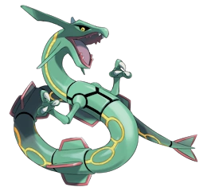

Tipo:
Dragón
Volador
Descripción:
Rayquaza surca la estratosfera con una elegancia imponente, manteniéndose tan lejos de la superficie que muchos lo consideran un mito. Su cuerpo serpenteante se desplaza entre las nubes como si formara parte de ellas, y cada movimiento deja tras de sí un rastro de energía que ondula en el aire. Se dice que su sola presencia es capaz de calmar tormentas desatadas y frenar la furia de otros Pokémon legendarios, como si ejerciera una autoridad natural sobre los cielos. Aunque rara vez interviene en los asuntos del mundo, cuando lo hace desciende envuelto en un resplandor esmeralda que ilumina incluso las noches más oscuras. En reposo, su aura apenas vibra, pero cuando libera su verdadero poder, el firmamento entero parece responder a su llamado.
Evoluciones & Prevoluciones
Ninguna